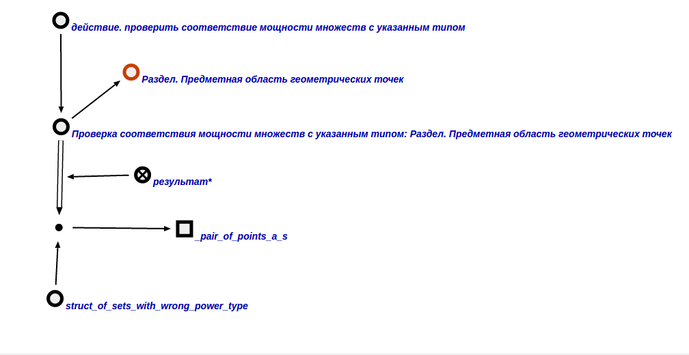

Команда проверки соответствия мощности множеств с указанным типом
предназначена для обнаружения множеств, мощность которых не соответствует их типу. Аргументом команды выступает структура, соответствия мощностей множеств с указанным типом которых нужно проверить. Результатом выполнения запроса является структура, в которую входят множества, мощность которых не соответствует их типу. Пример вопросной конструкции представлен ниже:
